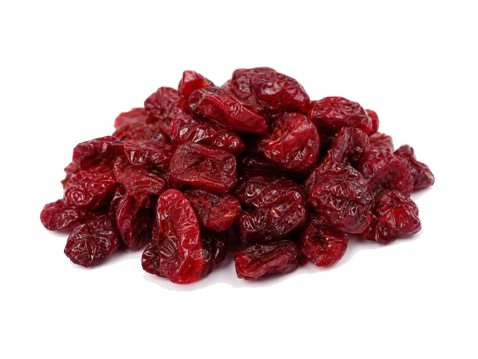

Owoce
Żurawina suszona
Żurawina suszona: 0.1 g białka, 308 kcal, 82 g węglowodanów i 1 g tłuszczu na 100 g. Kategoria: Owoce.
Kalorie308 kcalna 100 g
Białko / proteiny0.1 g
Węglowodany82 g
Tłuszcz1 g
Cena (szac.)~6,48 złza 100 g
Ceny zaktualizowano: maj 2026 (szacunek — ceny w popularnych supermarketach)
Porcja: garść (40g)
| Kalorie | 123 kcal |
|---|---|
| Białko | 0 g |
| Węglowodany | 32.8 g |
| Tłuszcz | 0.4 g |
| Cena (szac.) | ~2,59 zł |
Szczegółowe składniki odżywcze na 100 g
| Wartość energetyczna (kalorie) | 308 kcal |
|---|---|
| Białko (proteiny) | 0.1 g |
| Węglowodany | 82 g |
| Tłuszcz | 1 g |
| Tłuszcze nasycone | 0.1 g |
| Tłuszcze nienasycone | 0.9 g |
| Witaminy i minerały | Witamina C, Potas, Mangan |
| Współczynnik kcal / 1 g białka | 3080.0 |
| Cena produktu (szac. za 100 g) | ~6,48 zł |
| Cena za 100 g białka (szac.) | ~6475,00 zł |